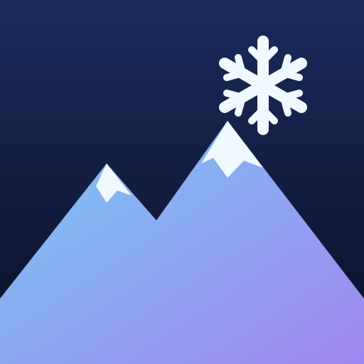
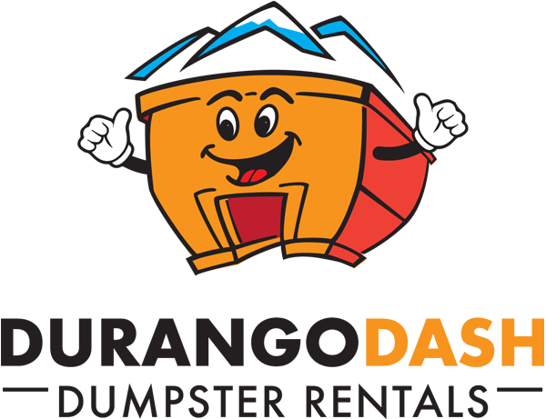

Durango Snow
Loading live data…

Presented by Durango Dash
Locally owned dumpster rentals in Durango ·
durangodash.com
Chris Tomer's daily forecast auto · daily
Snow forecast past from SNOTEL · next from NWS forecast
| Now | Past · depth change | Next · NWS forecast |
|---|
| Location | Depth | 24h | 48h | 72h | 7d | 24h | 48h | 72h | 7d |
|---|
Snow: <1" 1–3 3–6 6–12 12–18 18+ NWS official gridpoint · zeros blankTap a header to sort · tap a row to expand
Webcams tap a camera · stills refresh every 5 min